派工出貨系統 操作手冊
從業務下單到倉庫出貨，四個角色接力。這本手冊按角色分章——先找到你自己那一章，把它讀完就能開始用。
最後兩章是給想弄懂全貌的人：一整條流程走一遍看自己那一步影響誰，常見問題是實際會跳出來的錯誤訊息。
開始之前：怎麼進系統、你會看到什麼
系統沒有帳號密碼，用你的公司 Google 帳號自動辨識身分。用私人 Gmail 開會顯示沒有權限。
最上面那排頁籤，每個人看到的不一樣
你看得到哪幾個頁籤，取決於你被登記在哪份名單裡：
| 角色 | 你需要用到的頁籤 | 登記在哪 |
|---|---|---|
| 業務 | 下單、查詢 | 路由對照表的「業務信箱」欄 |
| 助理 | 首頁、出貨登錄、查詢 | 指令碼屬性 DISPATCH_ASSISTANTS |
| 主管 | 首頁、簽核、查詢、報表 | DISPATCH_SUB_APPROVERS／DISPATCH_BOSS_APPROVERS |
| 倉庫 | 首頁、倉庫核單、貨運單、查詢 | DISPATCH_WAREHOUSE |
?page=order 存成書籤就不會遇到。Chat 通知會自己找上你
你不必一直守著這個網頁。該你做的事會用 Google Chat 通知你，訊息裡都有一個藍色連結， 點下去就直接開到那一筆，不用自己再去清單裡找。
| 聊天室 | 誰要看 | 會收到什麼 |
|---|---|---|
| 助理出貨群組 | 助理、業務 | 核准後的認領卡片、倉庫回報有問題、退單申請 |
| 倉庫出貨群組 | 倉庫 | 待撿料出貨、核單後的備存訊息 |
| 派工小幫手（應用程式） | 所有人 | 可以直接問它問題，例如「查金宏鎖店的單」 |
業務：下單業務
下單頁把三種下單方式放在同一頁，用最上面那排按鈕切換。單別要先選——它決定下面出現哪些欄位、以及這張單要不要經過主管簽核。
| 單別 | 什麼時候用 | 要簽核嗎 |
|---|---|---|
| 發包安裝 | 要派師傅去裝的 | 要，送出後進主管簽核佇列 |
| 料件出貨 | 只出料、不派工 | 不用 |
| 📷 截圖下單 | 經銷商在 LINE 上丟訂單截圖給你 | 不用 |
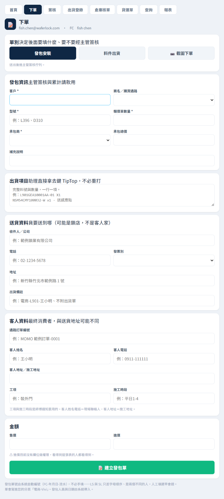
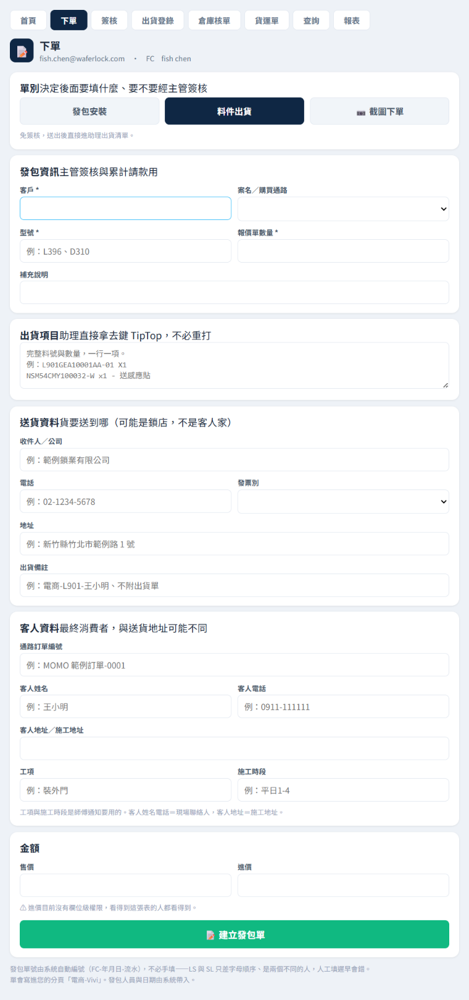
怎麼填
- 點最上面的頁籤 下單。
- 在「單別」那排點 發包安裝（或 料件出貨）。下面的欄位這時才會出現。
- 發包資訊：客戶、型號、報價單數量 三個是必填；發包安裝還一定要填 承包商。 案名與承包商是下拉選單，清單裡沒有的就選最後一項「其他」，旁邊會冒出文字框讓你自己打。
- 出貨項目：從 TipTop 整段複製貼上，一行一項，含料號與數量。這一格填了，助理就不用重打——這是整條流程最省力的一格。
- 送貨資料：貨要送到哪。注意這裡常常是鎖店，不是客人家。
- 客人資料：最終消費者。客人姓名／電話／地址加上工項與施工時段，會組成給師傅的通知。
- 按綠色的 📝 建立發包單。
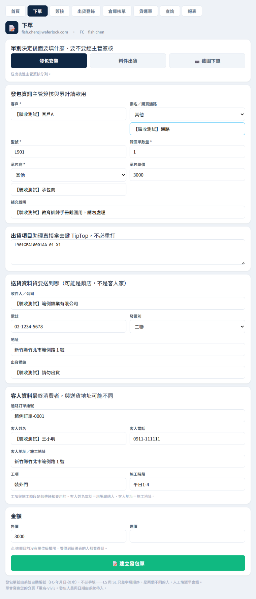
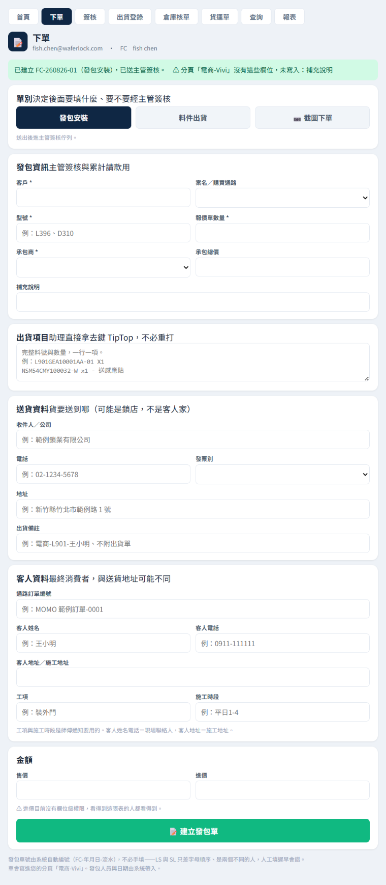
業務：截圖下單業務
經銷商在 LINE 丟訂單截圖給你的時候用這個，不用把截圖上的字一個一個打進表單。
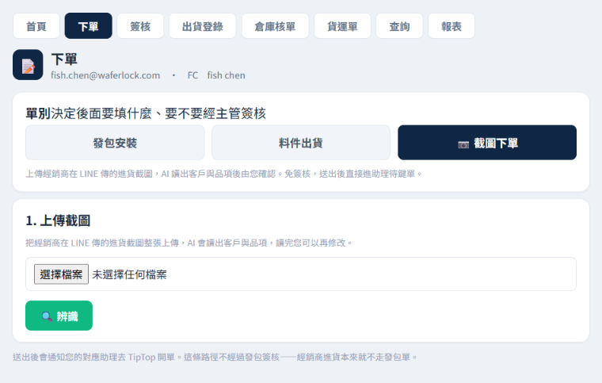
- 點 📷 截圖下單。
- 按 選擇檔案 選那張截圖。沒選就按辨識會跳「請先選擇圖片」。
- 按 🔍 辨識，等系統把截圖讀成欄位。
- 逐項核對。讀不到的欄位會留空，自己補上；讀錯的直接改。
- 一張截圖有多筆訂單時，按 ＋ 新增品項 補上其他筆。
- 確認無誤後按 📦 送出。
業務：查自己的單業務
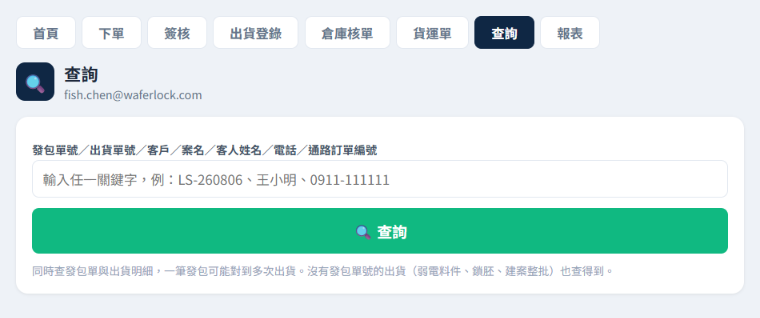
發包單號、出貨單號、客戶、案名、客人姓名、電話、通路訂單編號——任一個關鍵字都能查。
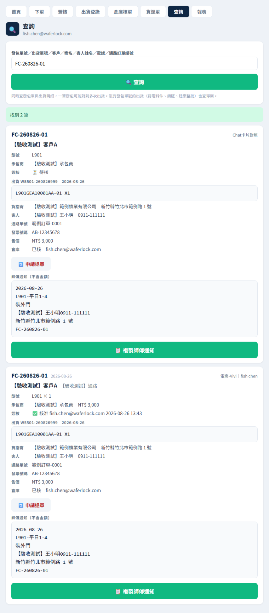
- 「⏳ 待核」還在主管那邊。
- 「出貨 ⏳ 尚未出貨」助理還沒鍵 TipTop 單號。
- 「倉庫 已核」倉庫已經撿完料。
- 要取消已經送出的單，按卡片上的 🔄 申請退單，助理會收到通知。
助理：從 Chat 認領助理
主管核准後，「助理出貨群組」會自動出現一張卡片。這是你的工作來源，不必自己去清單裡撈。
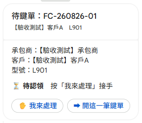
- 看到卡片後，先按 ✋ 我來處理。這一步是給其他助理看的，避免兩個人同時做同一筆。
- 卡片會變成「🔵 你的名字 處理中」，並附上時間。
- 再按 ➡ 開這一筆鍵單，會直接跳到那一筆的鍵單畫面。
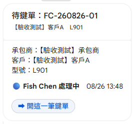
助理：補 TipTop 單號助理
業務已經下過單的，資料都是現成的，你只要補三格。
- 先在 TipTop 把這筆單開好，拿到出貨單號與訂單編號。
- 回到這個畫面，把 出貨單號（必填，格式
W5501-…）填進第一格。 - 訂單編號（
W5301-…）填第二格。 - 出貨日期 填第三格，格式
2026/08/26。 - 按 📦 鍵入並通知倉庫。
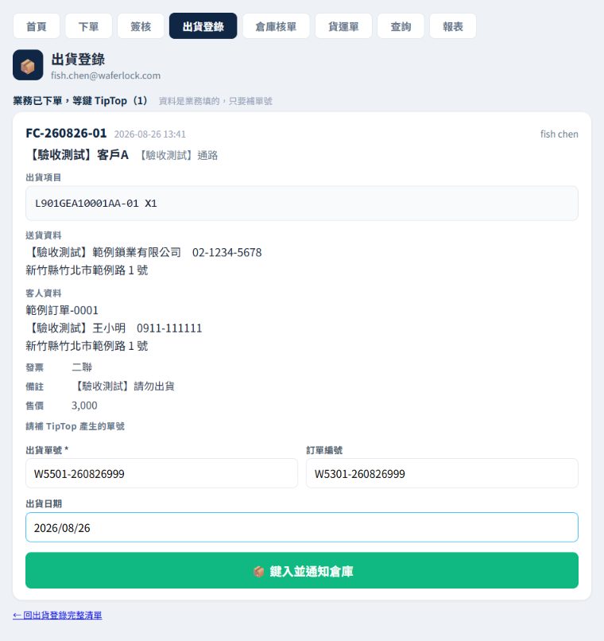
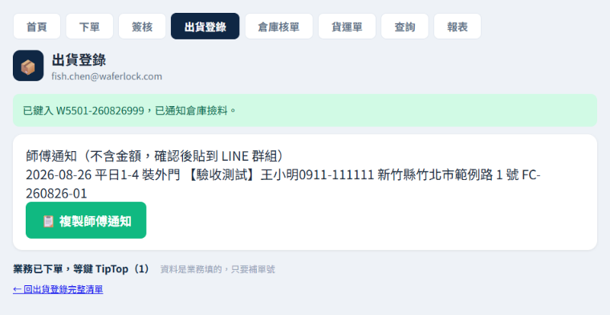
助理：舊流程——自己填整張助理
兩種情況要走這裡：業務還沒用下單頁（單子只有發包、沒有出貨資料），或是根本沒有發包單的出貨（弱電料件、鎖胚、建案整批）。
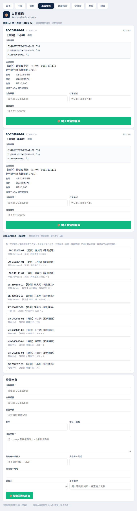
- 有發包單的：在中間「已核准待出貨（舊流程）」清單裡點那一筆，客戶與案名會自動帶進下面的表單。
- 沒有發包單的：略過清單，直接填最下面的表單，發包單號那格留空。
- 必填是 出貨單號 與 出貨品項。品項從 TipTop 整段複製貼上即可。
- 填貨指寄的收件人／電話／地址，選發票別。
- 按 📦 登錄並通知倉庫。
主管：簽核主管
業務送出「發包安裝」後會進你的簽核佇列，Chat 也會通知你。
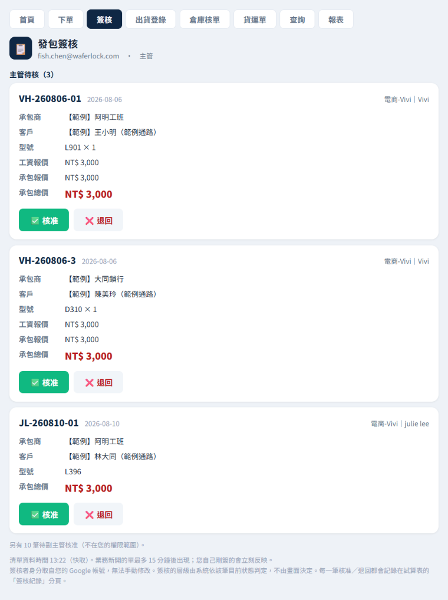
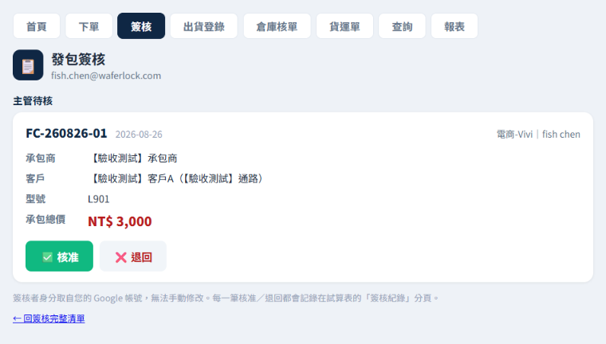
- 看承包商與承包總價是否合理。
- 沒問題按 ✅ 核准；有問題按 ❌ 退回。
- 退回要填原因，那句話會原封不動送回給業務——寫清楚可以少一次來回。
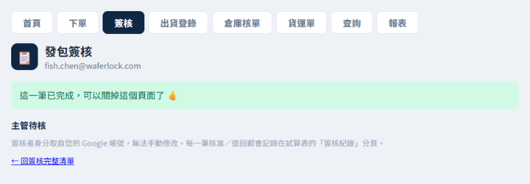
主管：儀表板與報表主管
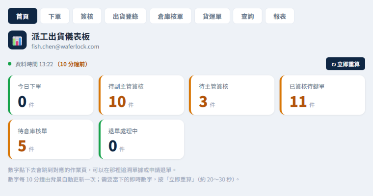
「最舊 N 天」是用來抓卡住的單的。數字異常大就表示有東西卡在那一關沒人動。
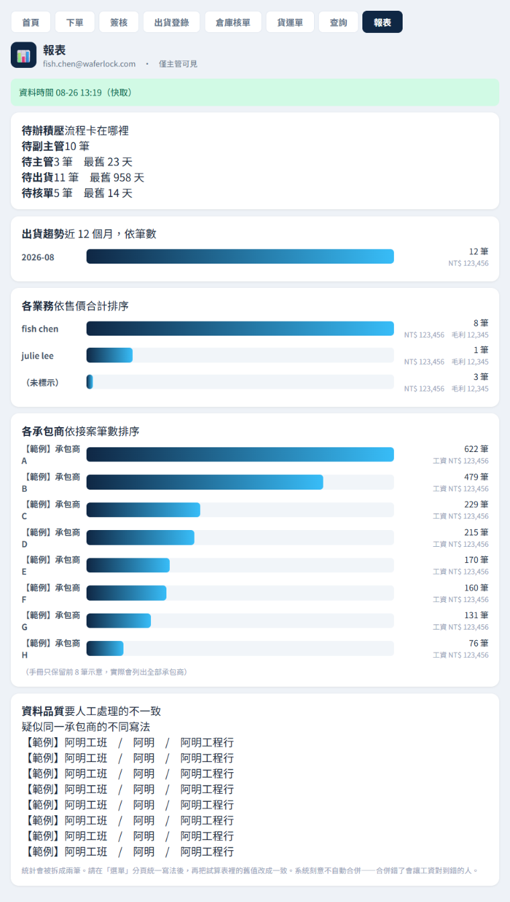
倉庫：核單與發票倉庫
助理鍵完 TipTop 單號後，「倉庫出貨群組」會收到一則待撿料出貨。
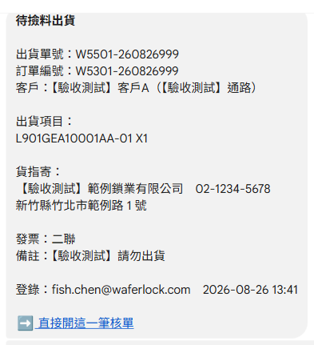
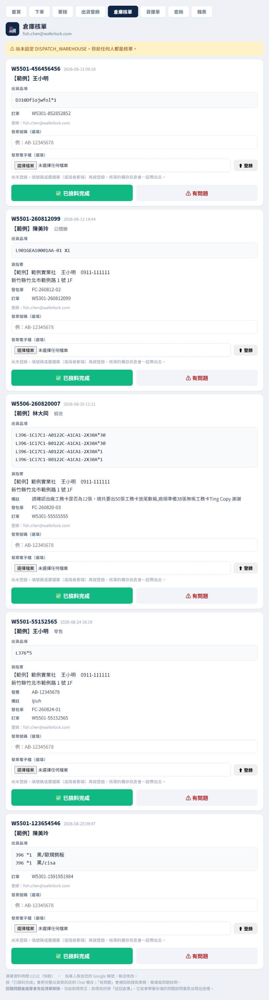
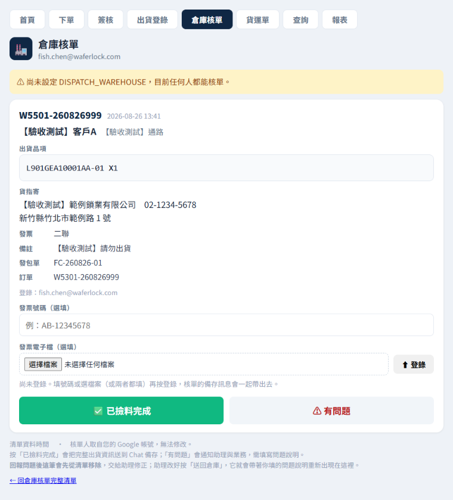
- 照「出貨項目」的料號與數量撿料。
- 有發票的話，把號碼填進 發票號碼（格式
AB-12345678），或用 發票電子檔 選檔案上傳，兩個都填也可以。 - 按 ⬆ 登錄。會出現「已登錄發票號碼 …，核單時會一起送出」。
- 撿完料按 ✅ 已撿料完成。
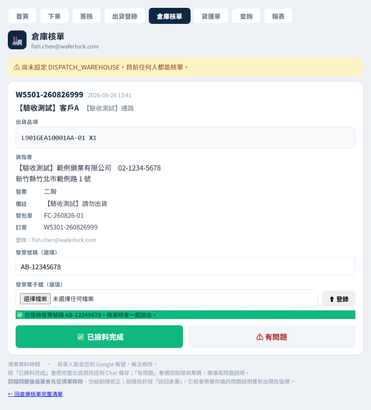
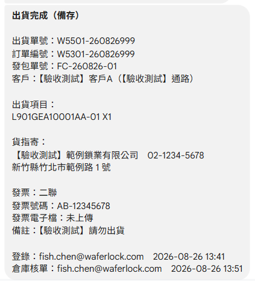
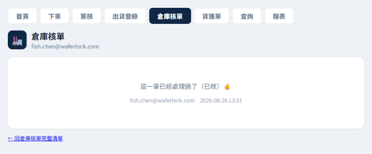
倉庫：回報有問題倉庫
料號對不上、數量不對、地址明顯有誤——不要自己猜著出，按 ⚠ 有問題。
- 按 ⚠ 有問題。
- 填問題說明（必填）。寫具體一點，助理是照這句話去改的。
- 送出後這筆會先從你的清單消失，交給助理處理。
- 助理改好按「送回倉庫」，它會帶著你寫的問題說明重新出現在你的清單裡，你可以確認是不是真的改對了。
倉庫：貨運單上傳倉庫
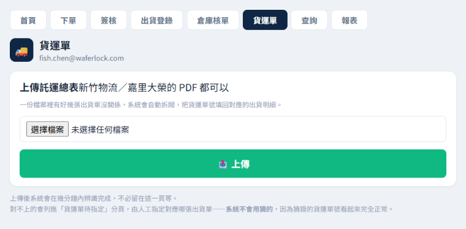
- 點頁籤 貨運單。
- 按 📤 上傳 選 PDF。一份檔案裡有好幾張出貨單沒關係，系統會自動拆開。
- 上傳完就可以離開，不必留在這一頁等，辨識要幾分鐘。
一整條流程走一遍
這一章不是操作步驟，是給你看自己那一步影響誰。下面是一筆單從頭到尾實際走過的樣子。
| # | 誰 | 做什麼 | 做完之後會發生什麼 |
|---|---|---|---|
| 1 | 業務 | 下單頁選「發包安裝」，填完送出 | 系統編號（例 FC-260826-01），進主管簽核佇列 |
| 2 | 主管 | 簽核頁按「核准」 | 助理出貨群組出現一張認領卡片 |
| 3 | 助理 | Chat 按「我來處理」 | 卡片變「處理中」，其他助理知道有人接了 |
| 4 | 助理 | 去 TipTop 開單，回來補三格單號 | 倉庫出貨群組收到「待撿料出貨」；同時產生師傅通知 |
| 5 | 倉庫 | 登錄發票、按「已撿料完成」 | Chat 收到完整備存訊息，這筆結束 |
| 6 | 任何人 | 查詢頁輸入單號 | 看到整條歷程：誰在什麼時候做了什麼 |
① 業務在出貨項目那一格貼的東西，助理直接拿去用。業務多花十秒貼完整，助理就少打十五個欄位。
② 每一步都有 Chat 通知，所以不需要有人「去問進度」。要查就自己開查詢頁，比問人快。
常見問題與錯誤訊息
看到這些訊息代表什麼
| 訊息 | 意思 | 怎麼辦 |
|---|---|---|
| 您沒有下單權限 | 你不在路由對照表的業務信箱欄裡 | 請資訊人員把你加進對照表，並填你要寫入哪個分頁 |
| 您沒有簽核權限 | 你不是副主管／主管，或你只是開錯頁 | 業務請改用 ?page=order；確實該有權限的請找資訊人員 |
| 您沒有出貨登錄權限 | 你不在助理名單 DISPATCH_ASSISTANTS | 找資訊人員加入名單 |
| 您沒有倉庫核單權限 | 你不在倉庫名單 DISPATCH_WAREHOUSE | 找資訊人員加入名單 |
| 報表僅限主管檢視 | 報表含毛利，整頁限制 | 需要數字請找主管 |
| 請先選擇單別 | 下單頁還沒點上面那排按鈕 | 先點「發包安裝」或「料件出貨」 |
| 客戶／型號／報價單數量 為必填 | 少填了必填欄 | 補上再送 |
| 發包安裝必須填承包商 | 選了發包安裝卻沒選承包商 | 下拉選單裡沒有就選「其他」自己打 |
| 出貨單號為必填 | 鍵單時沒填 W5501-… | 先去 TipTop 開單拿號碼 |
| 出貨品項為必填 | 舊流程表單少了品項 | 從 TipTop 整段複製貼上 |
| 這一筆已經處理過了 👍 | 別人已經先做完了 | 不用做，關掉即可 |
| 可能已經有人鍵過單號了，或這筆已被刪除 | 你手上的連結過期了 | 回完整清單重新找一次 |
| ⚠ 尚未設定 DISPATCH_WAREHOUSE | 倉庫名單還沒設，目前不擋任何人 | 不是你的操作問題，請資訊人員補設定 |
常被問到的
Q：我送出的單多久會出現在主管那邊？
清單有最多 15 分鐘快取，所以主管可能不會馬上看到。但主管自己剛簽的一定立刻反映。
Q：填錯了怎麼辦？
還沒送出就直接改。已經送出的：業務用查詢頁的「🔄 申請退單」；已經鍵單的請倉庫按「⚠ 有問題」退回來給助理改。
Q：為什麼我看得到八個頁籤，手冊說我只有兩個？
因為部分角色名單還沒設定，名單是空的時候系統會退回「不擋任何人」。照你那一章做就好。
Q：Chat 通知裡的連結點不開？
確認你是用公司 Google 帳號登入的瀏覽器開。用私人 Gmail 開會顯示沒有權限。
Q：一張截圖裡有好幾筆訂單怎麼辦？
辨識完後按「＋ 新增品項」逐筆補上，不要分成好幾次上傳同一張。
派工出貨系統操作手冊 v1 · 2026-08-26 · 截圖取自正式環境，示範單號 FC-260826-01（測試單）
系統有更動時，請一併更新本手冊與 教育訓練與流程/shoot_gas.py 重拍截圖。